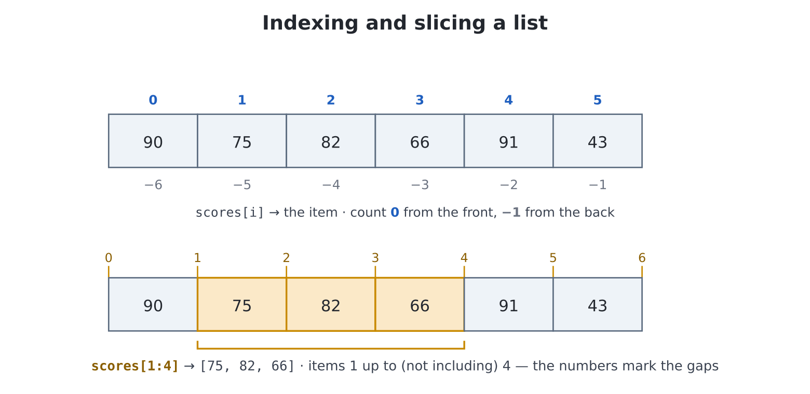

A variable holds one thing. But the interesting programs are about
many things: the scores of everyone who ever played, the
questions in a quiz, the aliens still descending. You could try
score1, score2, score3… and by
score7 you would know in your bones it is wrong. Python’s
answer is the collection — one variable holding a whole
crowd.
Take this chapter slowly. If you come from BASIC (or C), collections are the biggest genuinely new idea in this half of the book: BASIC’s arrays are fixed-size boxes you declare in advance, and Python’s collections are nothing like that. They grow and shrink as you go, they answer questions about themselves, and one of them — the dictionary — has no BASIC ancestor at all. The good news: they are also the moment loops finally get worthy material, and the chapter ends with two programs (a high-score table and a data-driven quiz) that use everything.
Here is the whole chapter in advance. Python gives you three containers, and choosing between them comes down to two questions — does order matter? and will it change?
[...] — an ordered row of
values you can grow, shrink and reorder. For sequences: scores, moves,
shopping.(...) — a small bundle of
values glued together, fixed at birth. For things that travel as one
fact: a (score, name), an (x, y).{...} — a lookup table
from keys to values, no positions at all. For facts about
things: name → age, item → count.Now each in turn — and this chapter also settles a debt: chapter 8
borrowed [] and .append for the plot; here is
the story it came from.
Square brackets make a list:
>>> shopping = ["milk", "eggs", "bread"]
>>> len(shopping)
3
>>> print(shopping)
['milk', 'eggs', 'bread']One variable, three values, in order — and the order is part
of the data: ["milk", "eggs"] and
["eggs", "milk"] are different lists. len()
(chapter 3, where it counted letters) counts anything’s items.
Fetch one item by its position — its index — in square brackets:
>>> shopping[0]
'milk'
>>> shopping[2]
'bread'
>>> shopping[-1]
'bread'Position counting starts at 0. That is not a quirk to memorise but a definition to understand: the index says how far from the front, and the front item is zero steps away. Lay the list out like this and both numbering schemes make sense at a glance:
index: 0 1 2
+---------+---------+---------+
| "milk" | "eggs" | "bread" |
+---------+---------+---------+
index: -3 -2 -1Negative positions count from the back — [-1] is always
the last item, no len() gymnastics required. (This is also
why range(5) starts at 0: ranges and list positions are
made for each other, as you are about to see pay off.)
Coming from MMBasic: a list is
DIM a$(10)set free — no declared size (it grows as needed), noOPTION BASE(positions always start at 0), and one list happily holds strings, numbers or both at once.
A list is fully editable, and this is where BASIC arrays get left behind. Replace an item by assigning to its position; grow, shrink and rearrange with methods (chapter 9’s word — commands attached to the thing by a dot):
>>> shopping[1] = "duck eggs"
>>> shopping.append("coffee")
>>> shopping.remove("milk")
>>> print(shopping)
['duck eggs', 'bread', 'coffee']The everyday editing toolbox:
| Method | Does |
|---|---|
x.append(v) |
add v at the end (the workhorse) |
x.insert(i, v) |
squeeze v in at position i |
x.remove(v) |
delete the first v found (error if absent) |
x.pop() |
take the last item off — and hand it to you |
x.sort() |
sort in place (its own section below) |
pop deserves a demonstration, because “remove it and
give it to me” is a surprisingly common need (dealing a card,
taking the next job):
>>> stack = [10, 20, 30]
>>> stack.pop()
30
>>> print(stack)
[10, 20]You have met len(). The other question you will ask
constantly is is this in there? — and it is exactly one English
word:
>>> "coffee" in shopping
True
>>> "milk" in shopping
FalseIn one line: a list is an ordered row — make it with
[], read it with [i] counting from 0, grow it
with .append, and ask it questions with len
and in.
Chapter 8’s for was built for this moment. Its true
calling was never range — it is visit every
item:
for item in shopping:
print(f"Buy: {item}")No positions, no len() — for ... in hands
you each item in turn, and the loop body sees them one at a time through
the variable you named. This is how you will total scores, hunt for a
winner, draw every alien.
When you also need the position — say, to print a numbered
menu — enumerate deals out position-and-item pairs:
for i, item in enumerate(shopping):
print(f"{i + 1}. {item}")(That i, item is two variables catching one pair at once
— the same trick as chapter 6’s a, b = b, a swap. The pairs
being caught are in fact tuples, this chapter’s second
container, and they get their own section shortly.)
In one line: for item in mylist: visits everything;
wrap the list in enumerate(...) when you also want each
item’s number.
Sometimes you want a stretch of the list, not one item — the top five scores, the first half of the deck. A colon inside the brackets does it:
>>> scores = [90, 75, 82, 66, 91, 43]
>>> scores[0:3]
[90, 75, 82]
>>> scores[:3]
[90, 75, 82]
>>> scores[3:]
[66, 91, 43][0:3] reads “from position 0, up to but not
including 3”. The half-open end is the same convention as
range — the two never disagree, and positions 0–2 plus 3–5
tile the list with no gap and no overlap; that is why Python
counts this way. Leaving an end blank means “from the start” / “to the
end”.
Slices also work on strings — "turtle"[0:3] is
'tur' — a fact chapter 12 dines out on.
In one line: x[a:b] is items a up to
(not including) b; blank ends mean “from the start” and “to
the end”.

Lists sort themselves, in place, with a method:
>>> scores.sort()
>>> print(scores)
[43, 66, 75, 82, 90, 91]
>>> scores.sort(reverse=True)
>>> print(scores)
[91, 90, 82, 75, 66, 43]Strings sort alphabetically — chapter 7’s
"bat" < "cat" was the machinery underneath. Now stand
back and look at what you hold: the high-score table promised in chapter
7 is three tools laid end to end — append the scores in,
sort(reverse=True), slice off the top [:5].
Before building it, though, one refinement: a high score is not a
number. It is a number and a name — which brings us to
tuples.
In one line: x.sort() reorders the list itself;
reverse=True for biggest-first.
Round brackets bind values into a tuple:
>>> entry = (91, "Ada")
>>> entry[0]
91
>>> len(entry)
2Reading works exactly like a list — positions from 0,
len, for, even slices. Writing does not: there
is no append, and assigning to entry[0] is an
error. A tuple is a list with the lid glued shut — fixed at birth.
Why would you want that? Because some values are not a
sequence but a single fact with parts: a
score-and-name, an x-and-y, a question-and-answer. The glue keeps the
parts travelling together, and guarantees nothing can quietly grow,
shrink or reorder a fact in passing. When you see (...) in
a program, you are being told these belong together, and this shape
won’t change — information a bare list cannot convey. (You have
already been handed one: the turtle’s t.position() returns
an (x, y) tuple.)
Tuples come apart into named variables on demand, which is where they get graceful:
>>> score, name = entry
>>> print(f"{name} scored {score}")
Ada scored 91That is called unpacking, and you have used it twice
without the name: chapter 6’s a, b = b, a swap, and
for i, item in enumerate(...) above, which unpacks each
dealt pair on arrival.
One more gift: when tuples are compared or sorted, their
first items decide (ties move to the second). So a list of
(score, name) pairs sorts straight into leaderboard order —
no extra work at all.
In one line: a tuple (a, b) glues a small fact
together; unpack it with x, y = pair; lists of tuples sort
by first element.
Coming from MMBasic: if you know recent MMBasics, tuples scratch the same itch as structures — a fixed bundle of related values that travels as one. Two differences: a tuple’s parts go by position (
entry[0]) rather than by field name, and one is made on the fly, no declaration. If your MMBasic predates structures, the old habit was “parallel arrays” (score(i)andname$(i)kept in step by hope) — a list of tuples is that idea with the hope made structural.
A list answers “what is at position 3?”. Just as often the
real question is “what is Ada’s score?” —
lookup by something meaningful, not by where it happens to sit. That is
the dictionary: curly brackets, holding
key: value pairs:
>>> ages = {"Ada": 36, "Grace": 45, "Alan": 41}
>>> ages["Grace"]
45Reading uses square brackets like a list — but what goes inside them is your chosen key, not a position. There are no positions. A dictionary is a filing cabinet, not a queue.
Assigning to a key files it — the same syntax both creates and updates:
>>> ages["Linus"] = 12 # new entry
>>> ages["Ada"] = 37 # birthday: existing entry updated
>>> len(ages)
4Ask for a key that isn’t there and you get a KeyError
naming the culprit (read the last line, as always). When unsure, ask
first — in checks keys:
>>> "Ada" in ages
True
>>> "Bob" in ages
FalseA for over a dictionary visits its keys;
.items() deals out key-and-value pairs (tuples again!),
unpacked on arrival:
for name, age in ages.items():
print(f"{name} is {age}")One honest warning: the pairs arrive in no promised order — a filing cabinet has no front row. If you need order (an alphabetical listing, a leaderboard), that is the moment to build a list from the dictionary and sort it. Order is list business.
The question you will actually face, program after program: am I storing a sequence, or facts about things? Scores as they happen, moves in a game, lines of a poem — sequences, lists. Each player’s best score, each word’s meaning, how many of each item the hero carries — facts looked up by name, dictionaries. When you catch yourself searching a list over and over for “the entry whose name is X”, you wanted a dictionary.
In one line: d = {"key": value} files facts by name;
read and write with d["key"], check with in,
walk pairs with .items(), and expect no particular
order.
Coming from MMBasic: there is no MMBasic equivalent — dictionaries are new power. Anywhere you once faked a lookup with parallel arrays and a search loop, a dictionary is one line, and it cannot get out of step with itself.
The chapter so far, in one table — worth a bookmark:
List [...] |
Tuple (...) |
Dictionary {...} |
|
|---|---|---|---|
| Holds | a sequence | one fact with parts | facts filed by key |
| Ordered? | yes, and it matters | yes, fixed | no promises |
| Changeable? | freely | never | add/update by key |
| Fetch by | position x[0] |
position x[0] |
key d["name"] |
| Shines at | scores, moves, queues | (x, y), (score, name) |
name → age, item → count |
And they combine: the natural high-score table is a list of tuples; chapter 25’s game will save its state as a dictionary holding lists. Containers holding containers is not an advanced topic — it is just what data looks like.
edit("hiscore.py"):
scores = []
print("HIGH SCORE TABLE -- type a name, or just Enter to finish")
while True:
name = input("Name: ")
if name == "":
break
points = int(input(f"Score for {name}: "))
scores.append((points, name))
scores.sort(reverse=True)
print()
print("=" * 24)
print(" HALL OF FAME")
print("=" * 24)
for i, (points, name) in enumerate(scores[:5]):
print(f"{i + 1}. {name:12} {points:5}")Every idea in the chapter earning rent: append gathers
(points, name) tuples, tuple-comparison makes
sort(reverse=True) a leaderboard, the [:5]
slice keeps it elite, and enumerate numbers the ranks. (The
{name:12} in the f-string pads the name to 12 characters so
the columns line up — a cousin of :.2f from chapter 6.)
This table is a component: any game you write from now on can
append to it. Chapter 12 teaches it to survive
power-off.
Chapter 7’s challenge quiz had its questions welded into the code.
Now the questions are data, and the program is a machine that
plays any of them. edit("quiz2.py"):
questions = [
("What does the M in MMBasic stand for?", "maximite"),
("What chip powers the Pico Computer 3?", "rp2350b"),
("Home is the screen's... (top-left or centre)", "centre"),
("What key saves in the editor? (ctrl-...)", "ctrl-s"),
]
score = 0
for q, a in questions:
answer = input(q + " ")
if answer == a:
score += 1
print("Correct!")
else:
print(f"It was: {a}")
print(f"\nYou scored {score} out of {len(questions)}.")The loop unpacks each (question, answer) tuple and plays
it. Feel the shift in power: to make the quiz twice as long you edit the
list, not the program — add a tuple, done. Separating
the machinery from the data it chews is one of the big ideas of
programming, and you have just done it. (Yes, answers must match
exactly, capitals and all — chapter 12’s string tools fix that properly;
.lower() is the spoiler.)
The say-it-again summary, because this chapter carries the next fifteen:
[] to make,
[i] from 0 to fetch, [-1] for the last,
.append to grow, in to ask, [a:b]
to slice (half-open, like range), .sort() to
order.for item in collection: is the loop’s
true form; enumerate adds positions.(score, name) is a
whole leaderboard strategy.d["key"] to read and write, KeyError when
absent, in to check, .items() to walk, no
order promised.shopping[-2],
scores[1:4], scores[:],
"eggs" in shopping. Then find out what
shopping[10] does — read the error’s last line like the
professional you now are.words = ["banana", "Apple", "cherry"], then
words.sort(). The result will surprise you — capital
letters sort before all small ones. (Chapter 12 fixes this
too.)pop() in a loop until it is empty
(while cards: works — an empty list counts as False, a
pleasant idiom to meet early). Why does dealing come off the
back? Check pop’s table entry.(q, a) pairs the
player missed in a second list, and print them at the end for
revision.menu = {"beep": 880, "boop": 440} and play
beep(menu["boop"]). Add a note of your own. Now a
word is controlling the hardware.enumerate), the player picks a number, and
run(programs[choice - 1]) launches it. Mind the
- 1 — and now you know why it’s there.take sword,
drop rope, list (loop with
.items()), quit. String surgery hint: chapter
12; for now two inputs (verb, then thing) is
honest.(sides, size, colour) tuples — e.g.
(3, 60, RED), (5, 90, CYAN) — and one loop
that draws each with chapter 9’s any-polygon trick. The drawing changes
when the list changes. You have invented the display list, and
chapter 19’s tile maps will shake your hand.random.choice(questions)
picks a random tuple from a list. Make the quiz ask five random
questions — repeats allowed — and then, harder: no repeats (hint:
remove what you’ve asked).